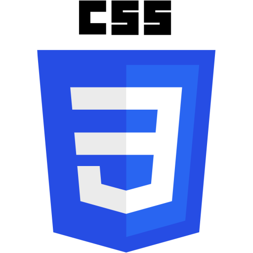

Rafael Ronald de Castro Crispim
Sou Rafael Ronald, casado, cristão, natural de Manaus onde moro atualmente. Tenho curso superior em Análise e Desenvolvimento de Sistemas, cursando Pós em MBA em segurança da Informação. Tenho conhecimento em suporte a usuários, conhecimento de rede de computadores: VPN, Ethernet, Intranet e Internet, noções de AD: Active directory Windows, GPO e administração de usuários, comandos e relatórios SQL Oracle e Noções de Linux, Conhecimento em Auditoria de Procedimentos Interno - Auditor de Não Conformidade, Politicas LGPD e Compliannce.
Objetivo
- Analista de Suporte e Infraestrutura de TI.
- Analista de Sistemas.
- Devesenvolvimento Front-end.
Formação
- Ensino Médio - 2014;
- Técnologo em Análise e Desenvolviento de Sistemas - Unip - 2019;
- Certificação de MDVR Veicular / Intelbras
- Pós em MBA em segurança da Informação - Universidade Descomplica - Cursando.
Experiências
Salcomp
Março/2016 à Fevereiro/2019
Cargo: Montador e Operador de Máquinas
Descrição:
Estágio - 11º Tribunal Regional do Trabalho - TRT AM
Março/2019 à Agosto/2019
Cargo: Estágio em Analista de DB Oracle
Descrição: Planejamento e execução de atividades da área de banco de dados Oracle e SQL Server, entendimento das necessidades e indicações de melhorias, check list periódico para acompanhamento do status do ambiente, para monitoramento dos banco de dados, identificar problemas de configuração e dimensionamento de instância, identificar problemas de performance no uso de banco de dados pelas aplicações.
Tawrus Segurança e Vigilância
Agosto/2019 à Outubro/2020
Cargo: Monitoramento de CFTV e Controle de Entrada e Saída de Funcionarios
Descrição: Controle de entrada e saída de funcionários e monitoramento de CFVT.
Companhia de Navegação da Amazônia - CNA
Outubro/2020 à Outubro 2021
Cargo: Auxiliar de Suprimentos e Patrimônio
Descrição: Atendimento direto ao cliente
Companhia de Navegação da Amazônia - CNA
Outubro/2021 à atualmente
Cargo: Técnologia da Informação
Descrição: Suporte a usuários presencial e home-office, Manutenção de rede de computadores: VPN, Ethernet, Intranet e Internet, pacotes Microsoft, AD: Active directory Windows, GPO e administração de usuários, servidores de impressões. Monitoramento e manutenção de CFTV e MDVR Veicular, Monitoramento e Manutenção de Inteligencia Artificial para Relatótiros de Desvios Comportamentais. Buscar melhorias para todos os setores através de tecnologias presentes no mercado.
Extra: Vice-Presidente da CIPA Gestão 2021/2022.
Linguagens de Programação
Principais linguagens
-

- 
Cursos
- Configuração e manutenção de redes e computadores
- Business Intelligence (BI) / ON-FIAP
- Cloud Fundamentals, Administration and Solution Architect / ON-FIAP
- Customer Exper0ience Management / ON-FIAP
- Design Thinking / ON-FIAP
- Gestão de Infraestrutura de TI / ON-FIAP
- Inteligência Artificial e Computacional / ON-FIAP
- Leadership Communication / ON-FIAP
- User Experience / ON-FIAP
- Circuito Fechado de TV - CFTV / Intelbras
- Certificação de MDVR Veicular / Intelbras